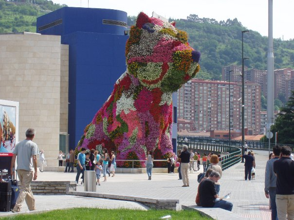

California
A place I have been to several times with both my family and my partner. Every time I go I am thankful I don't live there, but always appreciate the climate and amenities.
Spain
Spain was my first real trip that I took by myself and as a result it has a special place in my heart. I loved both northern and southern Spain, and wish to return one day.
Costa Rica
Costa Rica was a similar trip to Spain in that I was by myself. We spent a lot of time hiking in the hills and in boats along the rivers. Costa Rica is truly a magical place.
England
I was born in England and lived there for 8 years. Although it may be cheating to say going there is an adventure, it will always feel like one because in many ways it is so alien to me.
Japan
Japan had always been a bucket list travel destination for me, so when my father offered to take me to Tokyo, I couldn't say no. I wish to return to explore more of the islands some day.
The Sand Dunes
I have gone on many small motorcyle trips within my State of Colorado, but the Great Sand Dunes will always stick out to me for feeling like a foreign place has been dumped right in the middle of our state.